Buku gaya produksi · v1.2 · 7 November 2026
less.certain
Panduan lengkap supaya setiap video Less. punya rasa yang sama: tokoh, ekspresi, pose, dunia, kamera, bubble, cara bertutur, stand-up, suara, penutup, cover, sampai kemasan siap unggah.
Look closer. Think deeper.
Stay less certain.
Buku ini adalah ringkasan. Kalau ada arahan baru dari pemilik akun, arahan itu yang berlaku.
Mulai dari sini
Inti format dalam satu halaman
Less. adalah video animasi vertikal pendek tentang perilaku, hubungan, dan kebiasaan sosial. Tujuannya bukan memberi vonis, tapi membuka konteks yang jarang terlihat. Memahami bukan membenarkan.
Rumus satu kalimat. Naya atau Yan menghadapi satu situasi sehari-hari yang biasanya langsung dinilai. Lalu konteks yang jarang terlihat dibuka, dan video ditutup dengan pertanyaan yang tertinggal di kepala penonton.
Rasa yang harus selalu ada
- Hangat dan tenang; kritis tapi tidak agresif.
- Humor situasional atau menertawakan diri sendiri; tidak ada yang dipermalukan.
- Dunia Indonesia nyata yang kaya detail.
- Satu momen "oh ternyata": kagum atau terkejut, bukan marah.
- Penonton boleh tidak setuju; yang penting ada yang layak dipikirkan.
Format teknis
- Vertikal 9:16, 1080×1920, 30 fps.
- Reguler 61–75 detik (±145–175 kata); Open Mic di bawah 90 detik.
- Satu narator per video; suara AI ElevenLabs model v4.
- Tanpa musik; efek pop dan slide; volume −14 LUFS.
- Penutup: kartu brand 3 detik di atas adegan terakhir.
Isi buku
| 01 | Tokoh utama: Naya dan Yan | 11 | Struktur naskah 61–75 detik |
| 02 | Ekspresi dan efek wajah | 12 | Rumus hook dan penutup |
| 03 | Pustaka pose dan cara memegang benda | 13 | Seri Open Mic |
| 04 | Extras, keluarga, penonton | 14 | Kamera stand-up |
| 05 | Kucing oranye | 15 | Batas aman satire |
| 06 | Dunia dan lokasi | 16 | Suara dan audio |
| 07 | Gaya visual, warna, kedalaman | 17 | Penutup dan CTA |
| 08 | Kamera video reguler | 18 | Cover dan thumbnail |
| 09 | Bubble dan efek layar | 19 | Alur produksi |
| 10 | Subtitle | 20 | Kemasan dan unggah |
| T | Bagian teknis: blueprint, warna, rig, layar, waktu, storyboard | T7 | Contoh prompt untuk agent AI |
| L | Lampiran: lembar ide, contoh terisi, checklist | | |
01 · Tokoh utama
Naya dan Yan
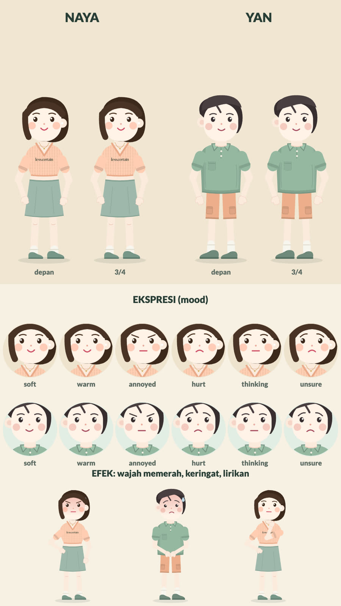
Tampak depan dan 3/4, enam ekspresi, dan efek wajah. Bentuk wajah, rambut, baju, dan proporsi tidak pernah didesain ulang.
Naya
Sifat: penasaran, suka memberi contoh, gampang kesal.
Penampilan: rambut bob cokelat tua, kaus rajut peach bertulisan less.certain, rok sage, sepatu hijau.
Peran: pencerita "aku" untuk cerita hubungan; ekspresinya paling lebar (kesal ↔ hangat).
Suara: Leya, hangat dan sedikit kesal di awal cerita.
Yan
Sifat: tenang, suka belajar, pendiam, sedikit pemalu.
Penampilan: rambut hitam pendek, kemeja polo sage, celana pendek peach.
Peran: narator reflektif; pasangan Naya di cerita hubungan; komika di seri Open Mic.
Suara: Ibnu, tenang tapi ekspresif.
Akting berbeda. Naya bereaksi cepat dan besar; Yan menunda, melirik ke bawah, tersipu. Jangan beri keduanya ekspresi yang sama sepanjang video.
Aturan tokoh
- Satu narator per video; tokoh lain tidak ikut bicara sebagai voice-over.
- Ekspresi mengikuti adegan; ada antisipasi sebelum aksi.
- Mata dan tubuh hidup: kedip acak, napas, lirikan, kepala ikut arah pandang.
- Tampak 3/4 sebagai sudut utama; ubah sudut kamera, bukan memutar badan ke belakang.
- Tampak belakang penuh.
- Skala tokoh di layar lebih dari 4,6× (ganti framing, jangan perbesar).
- Menunjuk atau acungan jempol (tangan belum punya bentuk itu).
- Logo, karakter, atau gaya baru tanpa persetujuan.
02 · Ekspresi dan efek wajah
Enam suasana hati
Setiap kalimat narasi memakai satu suasana hati yang paling cocok. Ganti ekspresi di titik yang bermakna, bukan acak.
| Mood | Wajah | Dipakai saat | Contoh kalimat |
|---|
| soft | senyum kecil, mata tenang | netral, bercerita santai | "Pacarku punya satu kebiasaan…" |
| warm | senyum lebar, pipi merona | lega, sayang, rekonsiliasi | "Makasih, ya." |
| annoyed | alis turun, mulut datar | kesal, menegur, marah | "Dia cuma diam." |
| hurt | alis naik di tengah, mulut turun | sedih, kecewa, dimarahi | "Habis bapaknya marah besar," |
| thinking | pandangan ke atas/samping | merenung, mencari jawaban | "Awalnya aku pikir…" |
| unsure | alis bimbang, mulut miring | canggung, ragu, malu | Yan menyodorkan es teh |
Efek wajah
- Wajah memerah dari dahi (gradasi), hanya untuk momen emosi: malu, marah, kewalahan.
- Tetes keringat untuk canggung atau gugup.
- Lirikan (arah pupil) menunjuk lawan bicara, benda, atau kamera.
- Bicara: mulut bergerak hanya untuk tokoh yang sedang mengucapkan bubble.
Menatap kamera
Naya atau Yan menatap kamera hanya di dua tempat: hook (pengakuan ke penonton) dan pertanyaan penutup. Di luar itu, tokoh melihat lawan bicara atau dunia ceritanya.
Satu efek per kalimat
Maksimal satu efek ekspresi per kalimat. Setiap efek menjawab: apa yang dirasakan tokoh di kalimat ini?
Mode dramatis (cahaya hangat + bayangan volume + latar gelap, untuk emosi sangat kuat) masih kandidat. Jangan dipakai sampai lembar contohnya disetujui.
03 · Pustaka pose
Pose yang boleh dipakai
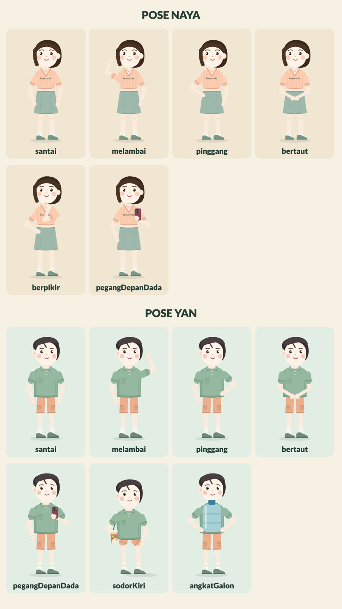
Semua pose yang sudah disetujui. Pose baru adalah kandidat dan harus ditunjukkan dulu.
| Pose | Arti / dipakai saat |
|---|
| santai | berdiri atau duduk netral; pose dasar |
| melambai | menyapa, memanggil, "di sini!" |
| pinggang | kesal, menegur, menunggu tidak sabar |
| bertaut | gugup, menahan diri, canggung, mendengarkan |
| berpikir | tangan di dagu, merenung (Naya) |
| pegangDepanDada | memegang HP, gelas, struk di depan dada |
| sodorKiri | menyodorkan benda kecil saat duduk (Yan) |
| angkatGalon | membawa benda besar dua tangan: kotak, kardus |
Memegang benda
- Benda digambar di titik genggam tangan; tangan menjepit tepi benda, bukan menutupi tulisannya.
- Benda besar ada di antara dua tangan; tangan tertutup sebagian oleh benda.
- HP yang dipegang menghadap kamera = punggung HP, bukan layar.
- Periksa tangan, siku, dan benda di crop 100%.
- Gestur yang jelas terbaca: melambai, santai, pinggang, bertaut, berpikir, memegang di depan dada.
- Aksi memperlihatkan kata kerja narasi ("beliin makanan" → kantong dipegang).
- Koordinat tangan dikarang di luar pustaka.
- Siku di atas bahu, lengan menyilang badan mendatar, tangan menempel aneh di perut.
04 · Extras, keluarga, penonton
Tokoh pendukung
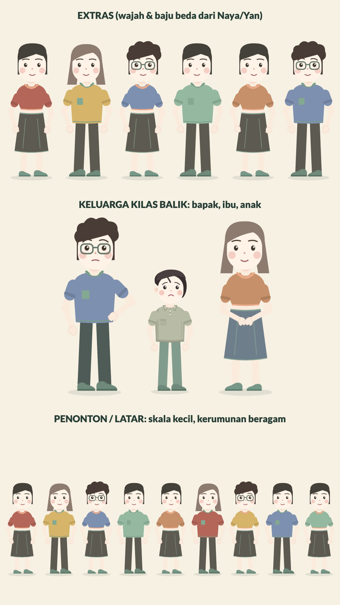
Extras dengan wajah dan baju berbeda; keluarga kilas balik; kerumunan latar.
Extras
- Memakai rig yang sama tetapi wajah, rambut, kacamata, dan warna baju berbeda dari Naya dan Yan.
- Jenis kelamin harus terbaca jelas.
- Warna baju dari palet hangat: bata, mustard, biru kelabu, sage, cokelat muda.
- Ekspresi lebih kecil dari tokoh utama; mereka tidak mencuri fokus.
Keluarga di kilas balik
- Bapak: kemeja biru kelabu, berkacamata. Ibu: baju cokelat muda.
- Yan kecil: tokoh anak, skala ±0,7 dari dewasa.
- Seluruh adegan kilas balik diberi warna sepia hangat dan vinyet.
Kerumunan dan penonton
- Skala kecil di latar; posisi dan pose beragam, tidak berbaris rapi.
- Isi kerumunan mencerminkan tempatnya (kafe, kampung, jalan).
- Di Open Mic, penonton depan boleh siluet gelap sebagai latar depan.
05 · Kucing oranye
Callback kecil untuk penonton lama
Kucing oranye belang berkalung wine dengan liontin emas. Muncul kecil di latar hampir setiap video, tidak pernah dijelaskan, tidak disebut narasi.
| Pose | Gerak |
|---|
| duduk | napas, kedip acak (kadang dua kali), telinga berkedut, ekor mengayun, lirikan |
| tidur | meringkuk, napas dalam, telinga dan ujung ekor berkedut |
| jalan | kaki bergantian, badan naik-turun, ekor tegak mengayun |
Identitas tetap
- Oranye belang, moncong dan dada krem, mata hijau sage.
- Belang "M" di dahi, telinga dalam merah muda.
- Kalung wine + liontin emas adalah pembedanya.
Aturan pakai
- Skala sama dengan tokoh di garis lantai yang sama (duduk ±18% tinggi orang).
- Satu kucing per shot; kalau lokasi sudah punya kucing lain, jangan ditambah.
- Tempat yang masuk akal: kasur, pagar, jalur taman, lantai.
- Tidak menutupi tokoh atau subtitle.
06 · Dunia dan lokasi
Indonesia yang terasa nyata
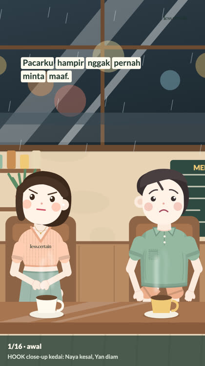
Kedai kopi malam: jendela berembun dengan hujan dan lampu jalan buram, lampu gantung, papan menu, meja bertaplak, kopi beruap.
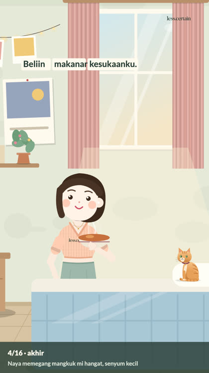
Kamar kos Naya: tirai, lampu tali, polaroid, rak, cahaya pagi/sore/malam, kasur bermotif.
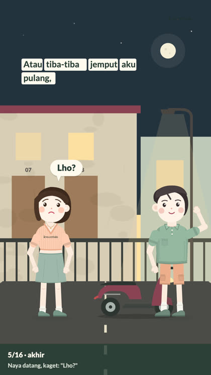
Depan kos malam: pintu bernomor, pagar besi, lampu jalan dengan kerucut cahaya.
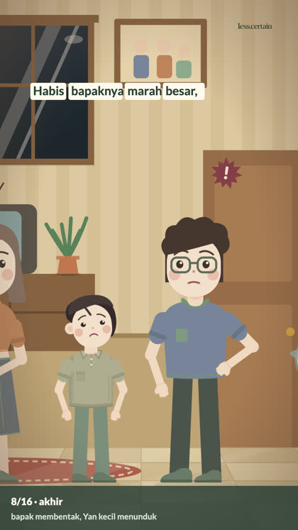
Rumah masa kecil Yan: wallpaper garis, TV tabung, foto keluarga, jam, kipas, pintu bisa terbuka.
Deretan jendela kampung: metafora "di banyak rumah"; tiap jendela satu keluarga.
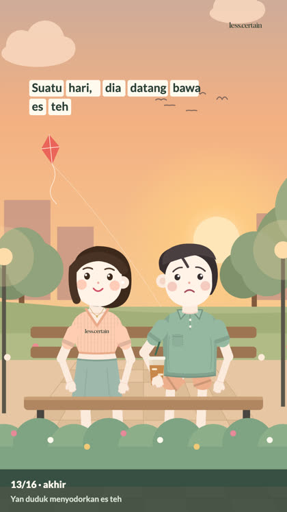
Taman senja: matahari rendah, siluet kota, lampu taman, bangku dengan semak depan.
Aturan dunia
- Satu dunia untuk satu kesatuan tempat dan waktu: jam, cahaya, dan posisi benda konsisten antar-shot.
- Setiap lokasi punya 6–8 benda khas, tekstur dinding/lantai, bayangan, dan 3 lapis kedalaman.
- Lantai, ubin, jalan berbentuk trapesium menuju titik hilang setinggi mata.
- Langit hidup: awan, burung, layangan, bulan.
- Benda besar ada di tempat yang wajar (motor di jalan, bukan di belakang meja).
- Benda cocok dengan waktu cerita (tidak ada kalender 2026 di kilas balik masa kecil).
- Tulisan di satu lokasi menunjukkan satu usaha yang sama.
- Tokoh duduk tertutup meja, kasur, taplak, atau semak sampai ke lantai.
07 · Gaya visual
Flat pastel dengan kedalaman
Bentuk datar tanpa garis tepi tebal, tapi bervolume lewat gradasi, cahaya, dan material. Acuan gaya: kanal Kok Bisa?.
paper #F7F0E4
cream #FFF9EF
ink #283D36
wine #8B4354
sage #95B8A2
gold #D1A258
peach #F2B79B
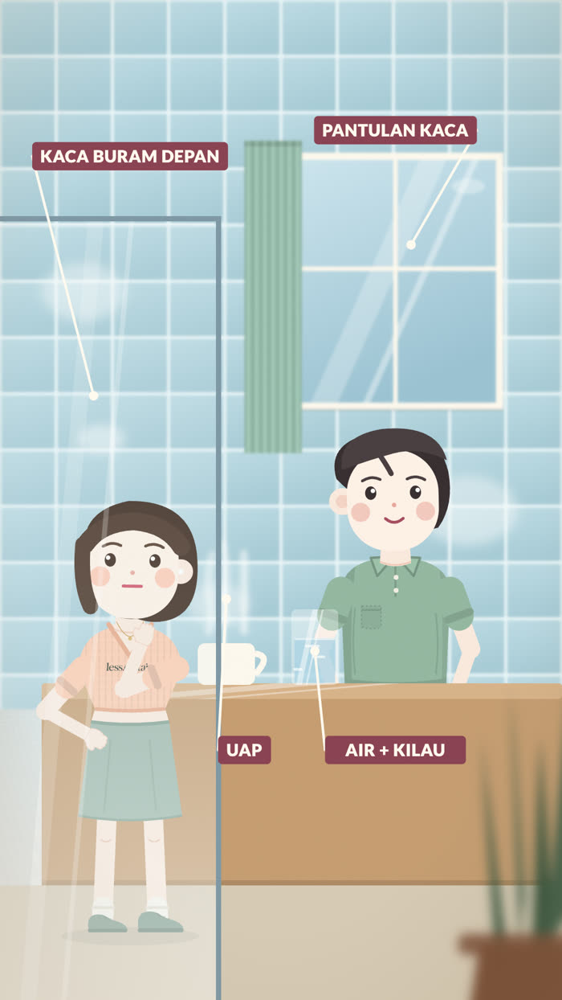
Contoh kedalaman dan material: latar buram saat close-up, kaca berpantulan, ubin bergradasi, uap.
Kedalaman
- Latar jauh diburamkan saat kamera mendekat.
- Ada lapisan depan (meja, tanaman, bahu) untuk rasa ruang.
- Cahaya tepi tipis memisahkan tokoh dari latar.
Material
- Kaca dengan dua garis pantulan diagonal.
- Kayu, ubin bergradasi, kilap meja, uap minuman, tirai berlipat.
Cahaya dan waktu
- Pagi biru-krem, sore oranye, malam biru tua dengan lampu hangat.
- Cahaya boleh berubah sebagai tanda emosi (senja makin hangat saat "oh ternyata").
- Kilas balik: sepia hangat + vinyet.
Warna aksen wine dipakai hemat: kata kunci di subtitle, tombol, tanda "!", tirai. Peach dan sage adalah warna tema hubungan dan perilaku.
08 · Kamera video reguler
Kamera yang selalu bergerak
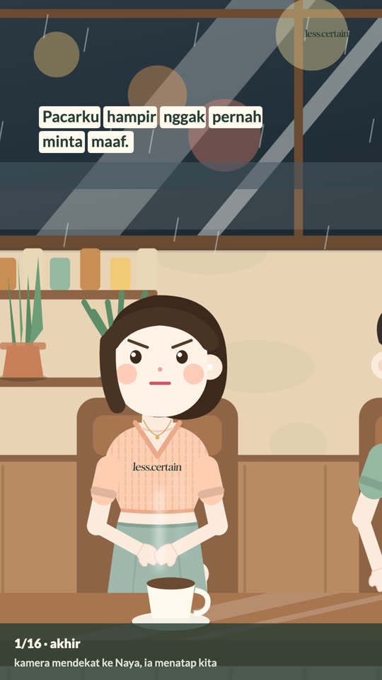
Close-up pembuka: tokoh besar, subtitle sejak awal.
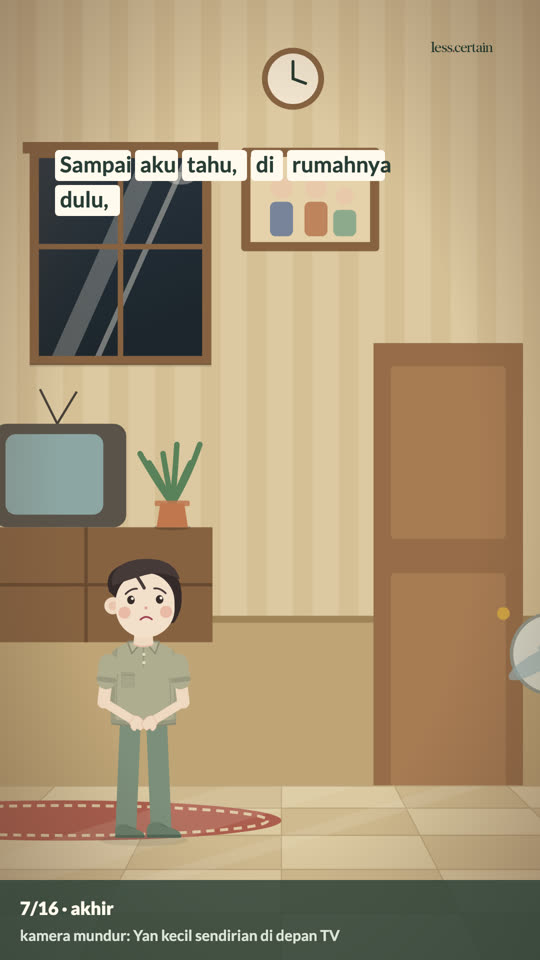
Tarik mundur: dari foto keluarga ke ruang tamu.
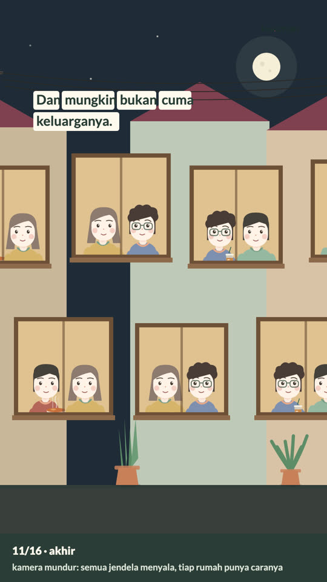
Zoom out metafora: satu jendela → semua jendela.
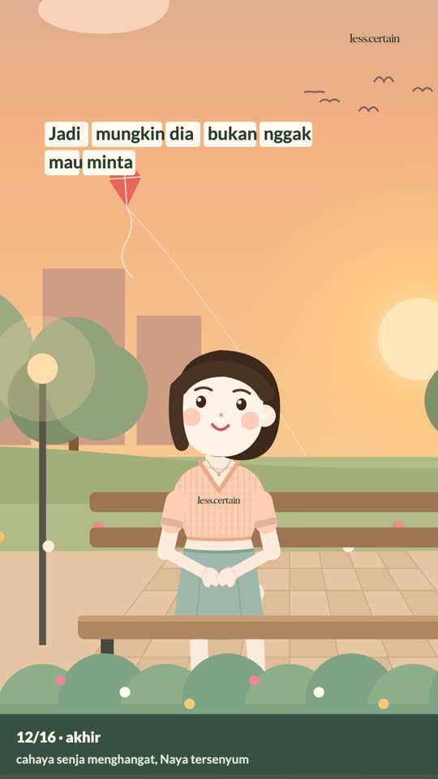
Dorong masuk + cahaya menghangat saat "oh ternyata".
| Shot | Ukuran tokoh | Dipakai untuk |
|---|
| Close-up | kepala dan bahu (skala layar 2,4–4,6) | hook, emosi, kalimat kunci, pertanyaan penutup |
| Medium | pinggang ke atas | dialog berdua, gestur, memegang benda |
| Lebar | seluruh badan + lokasi | memperkenalkan tempat, berjalan, perpindahan |
| Insert | benda atau layar HP penuh | pesan masuk, struk, makanan, foto |
Gerak di setiap shot
- Setiap shot punya gerak: dorong masuk, tarik mundur, geser, atau tokoh berjalan.
- Satu kalimat, satu perubahan: aksi, kamera, cahaya, atau benda masuk.
- Waktu diam maksimal 50% (Kok Bisa? 26–38%); tidak ada diam beruntun lebih dari 3 detik.
- Shot minimal 1,3 detik.
Pembuka dan transisi
- Frame pertama sudah hook: tokoh dalam situasinya, shot sedang/close-up, subtitle tampil dalam 0,3 detik.
- Tanpa shot lebar kosong atau fade dari hitam.
- Potongan langsung (cut) jadi pilihan utama; transisi maksimal 0,7 detik, tidak heboh.
- Masuk/keluar kilas balik: celup ke krem singkat.
09 · Bubble dan efek layar
Bubble gaya Kok Bisa?
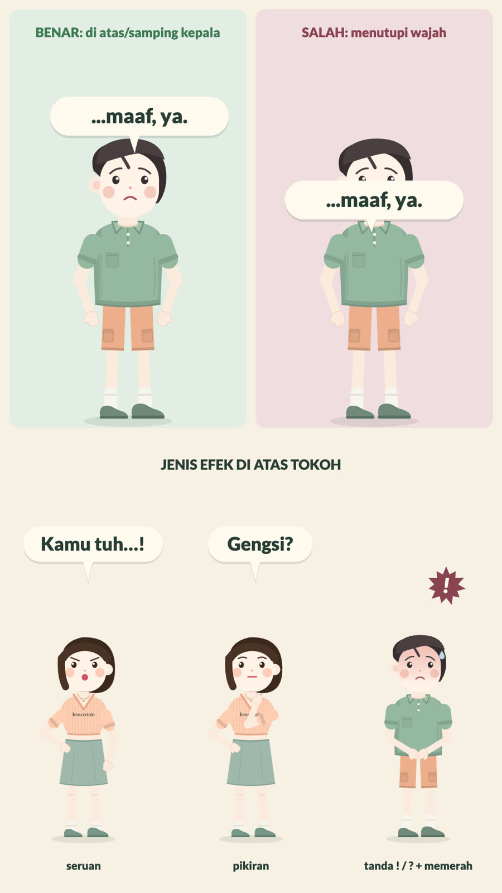
Atas: posisi benar dan salah. Bawah: seruan, pikiran, tanda "!" dengan wajah memerah.
Bentuk
- Oval krem tanpa garis tepi, bayangan sangat lembut.
- Ekor pendek melengkung ke kepala atau mulut pembicara.
- Huruf Lato Black besar, rata tengah, satu baris.
- Muncul memantul dengan efek "pop"; tampil singkat.
Isi
- Maksimal 4 kata: seruan atau ucapan pendek ("Kamu tuh…!", "Gengsi?", "Lho?", "Makasih, ya.").
- Kalimat panjang masuk narasi dan subtitle, bukan bubble.
- Bubble bukan pengganti subtitle.
Posisi
- Di atas atau samping kepala, tidak pernah menutupi wajah (lebih dari 12% area wajah = ditolak).
- Di dalam area aman layar; jarak ke subtitle ±100 px.
- Tidak menutupi tanda lokasi atau benda penting.
Efek layar lain
- Tanda "!" / "?" bergerigi warna wine/sage untuk kaget atau bingung.
- Kartu gag (Open Mic): struk, daftar centang, perbandingan harga.
- Label dengan garis penunjuk, layar terbelah, inset untuk penjelasan.
10 · Subtitle
Subtitle per kata
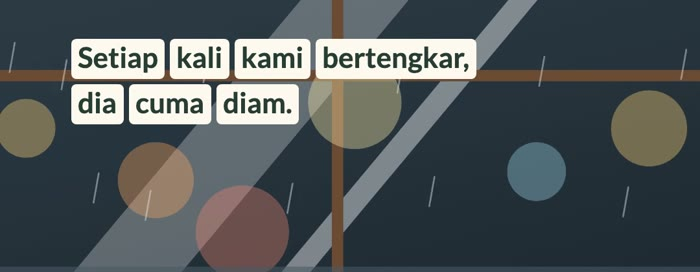
Latar krem per kata, kata kunci berlatar wine.
Tampilan
- Lato Bold 44 px (pada 1080×1920), warna tinta.
- Latar krem per kata dengan sudut membulat; kata kunci (misalnya "maaf") latar wine, huruf krem.
- Rata kiri, kiri atas layar (area aman), di bawah watermark.
- Muncul halus (geser kecil + memudar), stabil setelah muncul.
Aturan
- Maksimal 7 kata dan 2 baris per kemunculan.
- Dipecah menurut makna, mengikuti waktu ucapan.
- Tidak menabrak wajah, aksi, benda penting, atau tombol platform.
- Bahasa Indonesia; ejaan mengikuti narasi lisan.
- Penting untuk penonton yang menonton tanpa suara.
Area aman layar (semua teks dan kartu): kiri ≥60 px, atas ≥220 px, kanan ≤920 px, bawah ≤1480 px. Kolom kanan dan bagian bawah tertutup tombol dan caption platform.
Watermark less.certain kecil di kanan atas selama video; hilang saat kartu penutup muncul.
11 · Struktur naskah
Kerangka 61–75 detik
±145–175 kata lisan. Di atas 60 detik karena program bayaran TikTok hanya untuk video lebih dari 1 menit.
| Detik | Babak | Tugasnya | Aturan |
|---|
| 0–3 | Hook | Langsung masuk situasi, memuat kata kunci | Tanpa salam, tanpa kartu judul |
| 3–±15 | Situasi + penilaian | Situasi akrab dan vonis yang biasa muncul | Satu konflik saja |
| ±15–35 | Konteks | Contoh konkret, kejadian, kilas balik | Satu kalimat, satu perubahan |
| 55–65% | "Tapi…" / oh ternyata | Pembalikan terbesar | Ditandai perubahan visual |
| lanjut | Alasan dan bukti | Pola di luar cerita, riset bersumber, pengamatan jujur | Bedakan fakta, dugaan, opini |
| akhir | Penutup | Pertanyaan atau pengamatan yang tertinggal | Tanpa kesimpulan moral |
| +3 dtk | Kartu penutup | Brand + CTA | Tanpa ajakan share/tag/komen |
Tiga varian
A. Tapi ternyata — perilaku manusia.
B. Cerita lalu mundur — hubungan, "aku".
C. Dua sisi — pengamatan sosial.
Gilir varian antar-video.
Dikirim ke siapa?
Tulis satu orang yang paling mungkin dikirimi video ini. Kiriman lahir dari isi, bukan ajakan.
Emosi yang menyebar: kagum, terkejut (Berger & Milkman 2012). Jangan tutup dengan sedih saja.
Gaya bahasa
Lisan, sehari-hari ("nggak", "udah"), satu ide per kalimat, contoh konkret. Dugaan ditandai "mungkin". Angka ditulis dengan huruf.
Lolos kalau…- Bisa diceritakan dalam satu kalimat.
- Hook ≤3 detik dengan kata kunci.
- "Tapi…" di 55–65% durasi.
- Ada momen "oh ternyata".
- Penutup bisa dijawab dalam 1–3 kata.
Ulang kalau…- Butuh "jadi gini ceritanya".
- Ada pihak yang diejek atau dihakimi.
- Ada klaim tanpa sumber.
- Penutupnya moral.
- Durasi di luar 61–75 detik.
12 · Hook dan penutup
Rumus pembuka dan penutup
| # | Rumus hook | Bentuk | Contoh |
|---|
| 1 | Kalimat yang sering didengar | "Katanya, …" / kutipan akrab | "Sok-sokan kritik pemerintah. Emang udah ngasih apa ke negara?" |
| 2 | Situasi + penilaian cepat | situasi singkat lalu vonis | "Dia telat lagi. Pasti nggak menghargai waktuku." |
| 3 | Pengakuan "aku" | hal pribadi yang sedikit memalukan | "Pacarku hampir nggak pernah minta maaf." |
| 4 | Angka nyata | angka spesifik, wajib bersumber | (ditulis dengan huruf) |
| 5 | Pertanyaan judul | pertanyaan yang bikin penasaran | "Pernah nggak, kamu yakin banget sama penilaianmu…" |
Kata kunci pencarian
Satu kata yang diketik orang di pencarian (misalnya "minta maaf"). Muncul alami di hook yang diucapkan, subtitle, baris pertama caption, judul YouTube Shorts, dan satu hashtag.
Bentuk penutup
| Varian | Isi kartu | Kapan |
|---|
| ikuti | "Ikuti untuk melihat lebih dekat." | Bawaan |
| tanya | Pertanyaan tentang penonton sendiri, jawab 1–3 kata: "Kamu tipe yang bilang, atau yang nunjukin?" | Kalimat penutup narasi = pertanyaan ini; tokoh menatap kamera |
| seri | "Ikuti seri Open Mic." / "Keresahanmu bisa jadi episode berikutnya." | Open Mic |
Dihindari: salam pembuka, kartu judul, kalimat yang butuh episode lalu, "setuju nggak?", dan ajakan "share/tag/komen ya". Platform menurunkan jangkauan pancingan seperti itu, termasuk yang diucapkan.
Kenapa pertanyaan tentang diri penonton? Orang suka bercerita tentang dirinya sendiri; berbagi informasi tentang diri mengaktifkan sistem penghargaan otak (Tamir & Mitchell 2012).
13 · Seri Open Mic
Stand-up satire Yan
Rumus satu kalimat. Yan naik panggung open mic kafe membawa satu keresahan sehari-hari. Logika sistemnya dibawa sampai ujung absurdnya dengan nada datar, lalu ditutup callback tajam tanpa ceramah.
Penyampaian
- Deadpan sebagai dasar; marah/setengah teriak hanya 1–2 puncak.
- Punchline tidak lebih keras; penekanan lewat jeda sebelum kata pengejut.
- Jeda senyap 1,2–1,8 detik sebelum punchline terkuat; lebih pendek untuk punchline kecil.
- Tidak dipercepat; jeda diatur di penyuntingan.
- Langsung ke premis; tanpa "Selamat malam!".
Anatomi bit
Premis (keresahan + sikap) → setup sesingkat mungkin → punchline (kata pengejut di akhir) → tag 1–2 → callback di penutup. Pola bantu: aturan tiga, salah arah (misdirection).
Takaran
- Durasi di bawah 90 detik: satu premis besar, 2–3 bit, satu callback.
- 10–30 kata di antara tawa.
- Tawa maksimal 10% durasi; senyap ±8–12%.
- Tawa beragam: kekeh kecil, tawa sedang, maksimal 1–2 tawa besar.
Suara panggung
- Gumam ruangan sangat pelan + pantulan ruangan kecil di suara Yan.
- Tawa mulai tepat di ujung punchline; narasi boleh menimpa ekor tawa (tawa diredam).
- Tepuk tangan di akhir; kartu penutup muncul di atasnya.
Seri
"Open Mic #N: <judul>"; Syarat Protes = #1. Topik boleh dari komentar, dengan izin komentator dan janji yang ditepati.
14 · Kamera stand-up
Satu panggung, banyak sudut
Seluruh episode terjadi di satu dunia panggung kafe yang sama. Kamera berpindah sudut mengikuti ritme lelucon, bukan berpindah tempat.
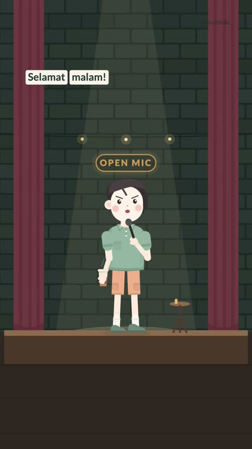
Lebar panggung: Yan di bawah lampu sorot, papan OPEN MIC. Untuk pembuka premis.
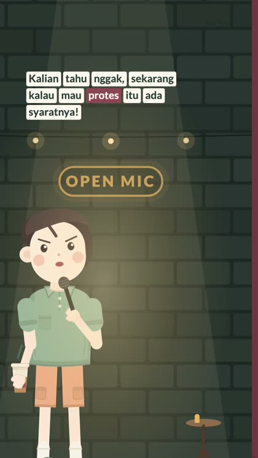
Dari samping penonton: siluet kepala penonton di latar depan. Untuk setup.
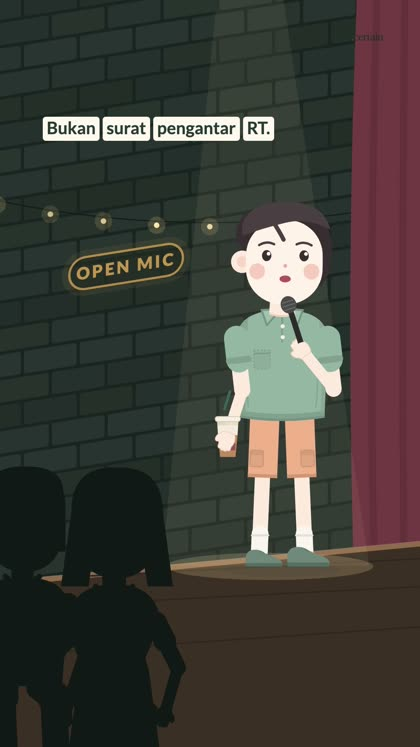
Medium + kartu gag: benda pembuktian (struk) muncul di samping Yan.
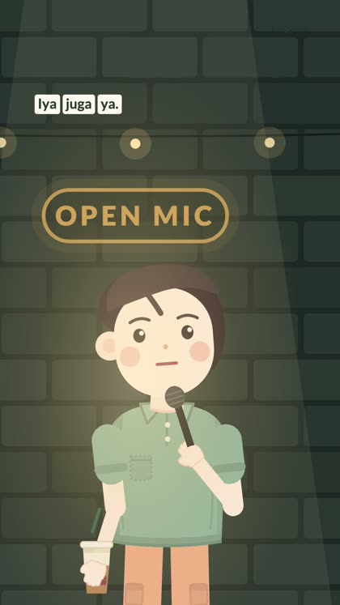
Close-up: wajah deadpan di kalimat kunci dan punchline.
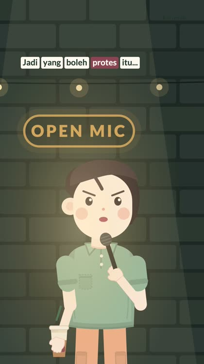
Kartu daftar centang: logika "syarat" dicentang satu per satu.
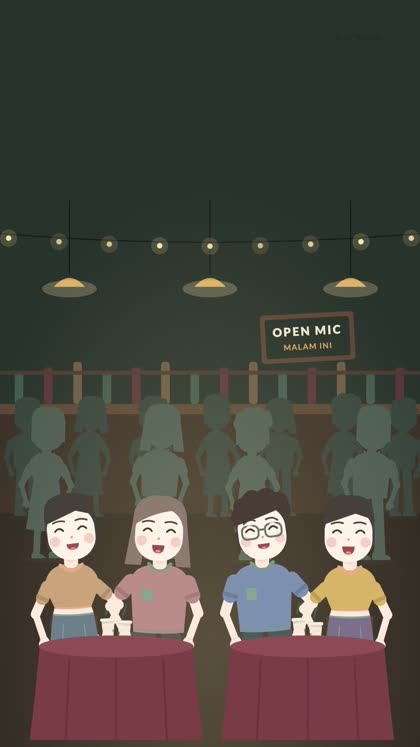
Dari atas: Yan dan meja-meja penonton; untuk jeda dan pergantian bit.
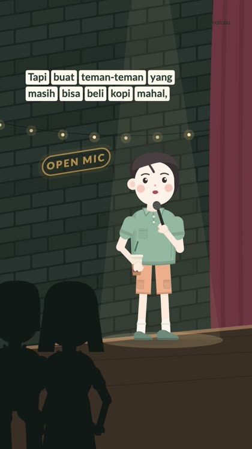
Reaksi penonton: penonton tertawa di meja; dipakai setelah punchline besar.
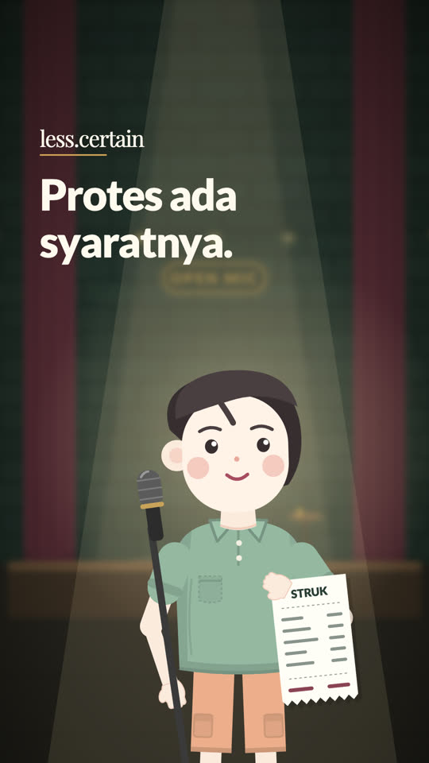
Cover Open Mic: panggung gelap, lampu sorot, mic, struk.
Aturan kamera stand-up
- Ganti sudut di batas bit atau sebelum punchline; tahan close-up selama jeda sebelum kata pengejut.
- Shot reaksi penonton tepat saat tawa terdengar, singkat.
- Kartu gag muncul memantul di area aman, tidak menutupi wajah Yan.
- Lampu sorot, papan OPEN MIC, gorden wine, dan meja penonton konsisten di semua sudut.
- Yan memegang mic; gestur kecil, wajah datar, sesekali melirik penonton.
- Penutup: tepuk tangan + kartu penutup varian seri.
15 · Batas aman satire
Tajam, tapi aman
Yang disindir adalah logika, sistem, kebiasaan, dan pihak berkuasa. Bukan orang kecil, korban, kelompok rentan, atau identitas. Lelucon harus berdiri di atas fakta yang benar.
| Boleh | Jangan |
|---|
| Menyindir perilaku, sistem, kebijakan, logika | Menyebut nama, inisial, jabatan spesifik, atau ciri yang membuat tokoh nyata dikenali |
| Tokoh fiktif tanpa kemiripan dengan orang nyata | Kutipan palsu atau tiruan suara tokoh nyata, termasuk dengan AI |
| Fakta yang disindir sudah bersumber | Menuduh orang tertentu melakukan kejahatan |
| Komentar penonton dengan izin pemiliknya | Menggambarkan komentator secara buruk tanpa izin |
| Lembaga dan kebijakannya sebagai sasaran kritik | Lelucon SARA, orientasi seksual, atau fisik seseorang |
Uji tunjuk (sebelum storyboard): kalau orang nyata yang tersindir menonton video ini, bisakah dia menunjuk satu kalimat dan berkata "itu tuduhan ke saya"? Kalau bisa, ubah kalimat itu sampai yang tersisa hanya pola perilakunya.
Konteks hukum (dicek 7 Nov 2026, bukan nasihat hukum)
- UU ITE Pasal 27A (nama baik) hanya untuk korban perseorangan; lembaga, institusi, jabatan tidak bisa melapor (Putusan MK 105/PUU-XXII/2024).
- KUHP baru Pasal 240–241 (penghinaan pemerintah dan lembaga negara) dibatalkan MK pada 28 Agustus 2026.
- Tetap berlaku: Pasal 218 (kehormatan presiden/wakil presiden, delik aduan), pencemaran nama baik perorangan, larangan ujaran kebencian SARA.
16 · Suara dan audio
Narasi yang tidak datar
| Hal | Aturan |
|---|
| Model | Naya dan Yan selalu ElevenLabs v4 untuk semua nada, karena nadanya tidak datar. Model v3 tidak dipakai untuk Yan (suaranya berderau). |
| Suara | Naya = Leya. Yan = Ibnu (dipilih lewat audisi). Tidak diganti tanpa keputusan pemilik akun. |
| Nada | Tag nada dalam naskah: [softly], [warmly], [curious], [flatly], [annoyed], [sighs]. Kontras lebih penting daripada marah terus-menerus. |
| Stand-up | Pengaturan paling ekspresif; setup datar, puncak bersemangat. |
| Musik | Tidak ada musik latar. Hanya narasi + efek pop (bubble, tombol) dan slide (transisi), pelan di bawah narasi. |
| Volume | −14 LUFS, puncak ≤ −1 dBTP, seragam di semua video. |
| Penyuntingan | Antar-kalimat dipotong di titik paling senyap, supaya tidak ada suku kata terpotong. Jeda ditambah di penyuntingan, bukan dengan mempercepat suara. |
| Pembuka | Narasi mulai ±0,3 detik setelah video mulai. |
| Biaya | Suara dibuat setelah storyboard disetujui. Revisi visual memakai rekaman yang sudah ada. |
| Efek penonton | Pustaka tawa dibuat sekali dan dipakai ulang; membuat baru perlu izin. |
Kunci akun suara bersifat rahasia: tidak pernah dicetak, disalin, atau dibagikan.
16 · Suara: tag ekspresi
Mengarahkan nada suara
Model v4 membaca tag dalam kurung siku sebagai arahan akting. Tag ditulis di awal kalimat dan berlaku sampai tag berikutnya. Tag tidak diucapkan dan tidak masuk subtitle.
| Tag | Rasa | Dipakai untuk |
|---|
| [softly] | pelan, akrab | hook pengakuan, kalimat reflektif, penutup |
| [warmly] / [tenderly] / [gently] | hangat, sayang, lembut | momen rekonsiliasi, "makasih", kilas balik keluarga |
| [curious] | bertanya, ingin tahu | pertanyaan penutup, pola "di banyak rumah…" |
| [thoughtful] | menimbang, merenung | belokan "oh ternyata", konteks |
| [skeptical] / [incredulous] | ragu, tidak percaya | penilaian awal ("Awalnya aku pikir…") |
| [annoyed] / [frustrated] | kesal, gemas | konflik, tuduhan, logika yang tidak masuk akal |
| [sarcastic] / [mocking] | menyindir, menirukan | Open Mic; kutipan orang yang menghakimi |
| [deadpan] / [flatly] | datar, tanpa emosi | setup stand-up, punchline kering |
| [shouting] | setengah teriak | 1–2 puncak per episode Open Mic saja |
| [serious] | tegas, jujur | kalimat inti sebelum callback |
| [sighs] / [exhales] / [chuckles] / [laughs] | suara napas dan tawa kecil | sebelum kalimat yang berat atau lucu; maksimal 1–2 per video |
| [short pause] / [long pause] | jeda | sebelum kata pengejut; jeda panjang lebih baik ditambah di penyuntingan |
Aturan menulis tag
- Satu tag per kalimat, maksimal; tidak semua kalimat perlu tag.
- Kontras lebih penting dari intensitas: softly → annoyed → warmly.
- Kutipan orang lain diberi tag sendiri di tengah kalimat: komentar: [mocking] "Halah!…"
- Tanda baca ikut mengarahkan: "…" ragu, "!" naik, "?" bertanya.
- Angka ditulis huruf ("lima puluh ribu"), singkatan dieja.
- Seluruh narasi dibuat dalam satu permintaan supaya warna suara konsisten; minta data waktu per huruf (timestamps) untuk subtitle.
Pengaturan permintaan
| Model | eleven_v4 |
| Naya | Leya · ID suara hAiGVB2GdXVPlylkAP9C |
| Yan | Ibnu · ID suara URAuwR59OqCASDVp35yi |
| Narasi | stability 0,5 · similarity 0,75 · speed 1,0 |
| Stand-up | stability 0,0 (paling ekspresif) |
| Keluaran | MP3/WAV 44,1–48 kHz + timestamps |
ID suara bukan rahasia; kunci API tetap rahasia dan tidak pernah ditulis di naskah, prompt, atau dokumen.
16 · Suara: contoh bertag
Naskah siap dikirim ke suara
Teks persis seperti ini yang dikirim dalam satu permintaan. Satu kalimat per baris; tag hanya saat nada berubah.
Contoh narasi bertag (reguler, Naya)
[softly] Pacarku hampir nggak pernah minta maaf.
[annoyed] Setiap kali kami bertengkar, dia cuma diam.
[warmly] Tapi besoknya, dia tiba-tiba nanya aku udah makan atau belum.
[skeptical] Awalnya aku pikir, dia cuma gengsi.
[thoughtful] Sampai aku tahu, di rumahnya dulu, nggak ada yang terbiasa bilang maaf.
[tenderly] "Makasih, ya. Aku tahu ini caramu minta maaf."
[curious] Kalau kamu, tipe yang bilang, atau yang nunjukin?
Contoh narasi bertag (Open Mic, Yan)
[deadpan] Sekarang kalau mau protes itu ada syaratnya.
Bukan izin keramaian. Bukan surat pengantar RT. [sarcastic] Struk belanja!
Terus ada yang komentar: [mocking] "Halah! Protes kok sambil bawa es kopi susu."
[annoyed] Saya diam. Saya mikir. [sarcastic] Iya juga ya. Mahal banget.
[short pause] [shouting] Itu termasuk yang kami protes!
Kesalahan umum
- Tag di setiap baris sehingga nada melompat-lompat.
- [shouting] lebih dari dua kali; punchline jadi berisik, bukan lucu.
- Angka dan singkatan ditulis angka/huruf besar ("50rb", "RT" dibaca aneh).
- Kalimat dibuat terpisah per permintaan sehingga warna suara berubah.
- Mempercepat audio untuk mengejar durasi; potong naskah saja.
Setelah suara jadi
- Dengarkan seluruhnya; ulangi hanya baris yang salah nada.
- Cek tidak ada suku kata terpotong di sambungan.
- Tambah jeda di penyuntingan (mis. 0,6 dtk setelah belokan).
- Subtitle memakai teks tanpa tag, waktunya dari timestamps.
- Simpan audio + data waktu; jangan membuat ulang teks yang sama.
17 · Penutup dan CTA
Kartu penutup 3 detik
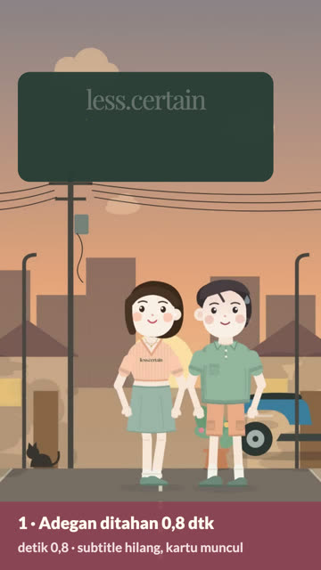
0,8 detik: adegan ditahan, subtitle hilang, kartu mulai muncul.
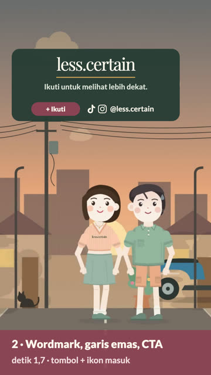
Kartu di area subtitle: wordmark, garis emas, CTA, tombol.
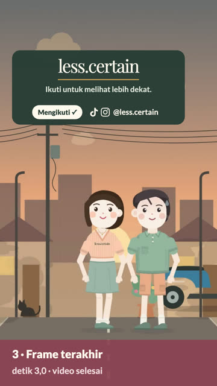
3,0 detik: "+ Ikuti" ditekan jadi "Mengikuti ✓"; video selesai.
Bentuk
- Kartu hijau tua di atas adegan terakhir, tidak memudar ke layar gelap.
- Wordmark less.certain + garis emas, satu baris CTA, tombol "+ Ikuti" → "Mengikuti ✓", ikon TikTok dan Instagram dengan @less.certain.
- Posisi bawaan atas (area subtitle) supaya tokoh tetap terlihat; posisi bawah kalau bagian atas adegan ramai.
- Efek suara: slide saat kartu masuk, klik saat tombol ditekan.
Kenapa 3 detik
Kanal animasi sejenis selesai 0–4 detik setelah kata terakhir. Layar gelap yang lama memberi tanda "selesai" sehingga penonton menggeser sebelum CTA terbaca.
CTA bergantian
Ikuti (bawaan), tanya (pertanyaan tentang penonton), seri (Open Mic). Jangan terasa seperti formula di setiap video.
18 · Cover dan thumbnail
Cover yang terbaca di grid
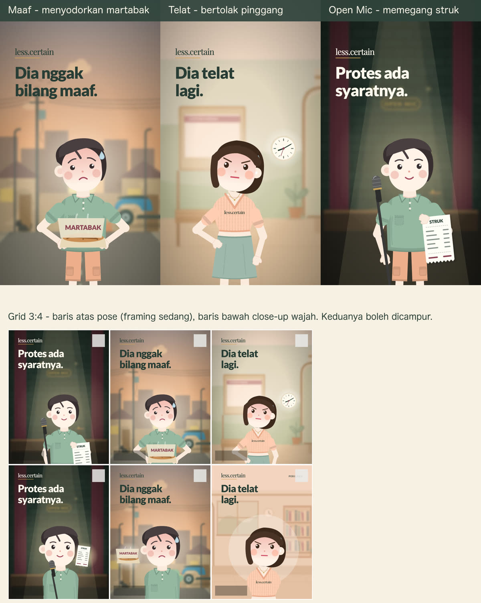
Atas: cover pose (Maaf), wajah dengan jam (Telat), Open Mic. Bawah: simulasi grid profil 3:4 dengan ikon platform.
Susunan
- Wordmark kiri atas; teks hook 2–4 kata besar di bawahnya, sama dengan hook video.
- Tokoh dengan emosi jelas; wajah adalah bagian paling terang.
- Latar lokasi diburamkan, warna tema tipis, vinyet di tepi.
- Satu benda petunjuk cerita, sebaiknya dipegang tokoh.
- Tanpa label tema (tertutup ikon Reels).
Dua framing
- Pose sedang (cover utama): gestur + benda yang dipegang menceritakan gagasan.
- Close-up wajah (alternatif): kalau emosinya yang menjadi cerita.
Grid profil
- Instagram dan TikTok memotong cover jadi 3:4; isi penting di tengah.
- Kanan atas (ikon) dan kiri bawah (jumlah tayangan) dikosongkan.
- Bawah 9:16 bisa tertutup judul di YouTube Shorts.
19 · Alur produksi
Dari ide sampai siap unggah
| # | Langkah | Isi | Gerbang |
|---|
| 1 | Lembar ide | Situasi, penilaian, hook, kata kunci, belokan, bukti, penutup, cover | |
| 2 | Naskah | Ditulis dengan kerangka 61–75 detik; dicek dengan daftar lolos/ulang | ditunjukkan ke pemilik |
| 3 | Storyboard | Gambar diam awal → akhir untuk setiap kalimat, dengan lokasi, kamera, pose, bubble | wajib disetujui |
| 4 | Suara | Narasi satu take dengan model v4 | setelah storyboard |
| 5 | Penyuntingan suara | Potong di titik senyap, jeda, waktu subtitle | |
| 6 | Animasi | Film dibuat dari storyboard yang disetujui; kamera bergerak terus | |
| 7 | Pemeriksaan | Anatomi, area aman, bubble vs wajah, pembuka, waktu diam | tanpa temuan |
| 8 | Render dan efek | Video final, efek pop/slide, volume −14 LUFS | |
| 9 | Cover | Versi pose dan wajah, potongan 9:16, 4:5, 3:4 | |
| 10 | Kemasan | Caption, judul Shorts, komentar sematan | ditunjukkan ke pemilik |
| 11 | Paket siap unggah | Video, cover, caption, data unggah dalam satu paket | setelah disetujui |
Prinsip kerja
- Perbaikan yang berguna untuk video lain dijadikan komponen bersama, bukan dibuat ulang per video.
- Aset yang sudah dipakai video terkirim tidak diubah; perubahan jadi versi baru.
- Revisi cerita yang sama naik versi (v2, v3); versi lama tetap utuh.
- Arahan baru yang menimpa arahan lama ditanyakan dulu ke pemilik akun.
- Tidak ada jadwal tetap: video dibuat dari ide, bukan konten harian.
- Mengunggah dan memublikasikan hanya atas permintaan pemilik akun.
20 · Kemasan dan unggah
Caption, komentar, paket unggah
Template caption
[hook satu kalimat + KATA KUNCI]
[satu kalimat yang bikin penasaran]
[pertanyaan tentang penonton, 1–3 kata]
Sumber: [singkat] (kalau ada klaim fakta)
#less #[katakunci] #[topik] #[umum]
Judul YouTube Shorts
Kata kunci di awal + hook, ±60 karakter. Contoh: "Minta maaf tanpa kata: kenapa dia jarang bilang maaf?"
Komentar sematan
Reguler: sumber riset + satu pertanyaan lanjutan.
Open Mic: "skenario fiktif, menyindir pola, bukan orang" + ajakan keresahan untuk episode berikutnya.
Paket siap unggah
Hanya video yang sudah disetujui pemilik akun. Satu paket per video, dinamai judulnya (tanpa tanggal):
- video final (file master);
- cover utama versi pose (9:16, 3:4, 4:5) dan cover alternatif versi wajah;
- caption per platform, judul Shorts, komentar sematan;
- data unggah: judul, tanggal disetujui, kutipan persetujuan, hashtag, sidik file, status unggah per platform.
Saat mengunggah
- Unggah file master langsung ke setiap platform; jangan unduhan dari platform lain (konten tidak orisinal diturunkan).
- Pilih cover dari paket; sesuaikan potongan grid kalau perlu.
- Perbarui status unggah setelah selesai.
Sinyal per platform
| Platform | Yang diperhatikan |
|---|
| TikTok | menonton sampai habis; video di atas 1 menit untuk program bayaran; pencarian membaca caption, teks layar, ucapan |
| Instagram | waktu tonton, like per jangkauan, kiriman per jangkauan; grid 3:4 |
| YouTube Shorts | viewed vs swiped away, engaged views; tanpa end screen; judul dengan kata kunci |
| Facebook | orisinalitas; unggahan ulang diturunkan |
Bagian teknis
Untuk agent AI dan animator
Halaman berikut berisi ukuran, koordinat, warna, rumus gerak, waktu, pengaturan suara, format data, dan contoh prompt. Tujuannya: siapa pun, manusia atau agent, bisa membuat video Less. yang terlihat dan terdengar sama tanpa melihat file produksi asli.
Semua ukuran ditulis untuk kanvas 1080×1920 px. Kalau alatmu memakai satuan lain, skalakan secara proporsional.
T1 · Cara memakai bagian teknis
Apa yang dibutuhkan agent
Kemampuan minimum
- Menggambar vektor (SVG, Canvas, After Effects, Rive, Lottie, atau sejenis) dan mengekspor frame 1080×1920, 30 fps.
- Memanggil ElevenLabs Text-to-Speech dengan data waktu per huruf.
- Menggabungkan video dan audio (misalnya ffmpeg) dan mengukur kenyaringan.
- Menunjukkan hasil ke pemilik akun dan menunggu persetujuan.
Batas yang jujur
- Model gambar/video generatif (teks → video) tidak bisa menjaga tokoh tetap identik antar-shot. Gunakan hanya untuk eksplorasi, bukan video akhir.
- Tokoh harus digambar ulang sebagai vektor mengikuti blueprint T2 dan warna T3. Bandingkan dengan gambar tokoh di halaman 3 sebelum lanjut.
- Buat lembar tokoh dulu (depan, 3/4, 6 ekspresi, semua pose) dan minta persetujuan sebelum membuat video pertama.
Urutan kerja agent
| # | Tahap | Keluaran | Berhenti? |
|---|
| 0 | Lembar tokoh (sekali saja) | Gambar tokoh, ekspresi, pose, kucing | ya, minta persetujuan |
| 1 | Lembar ide | Isian lampiran lembar ide | |
| 2 | Naskah bertag | Narasi per baris + tag ekspresi + bubble + perkiraan durasi | ya |
| 3 | Storyboard | Satu panel awal → akhir per kalimat (format T7) | ya, wajib |
| 4 | Suara | Satu file narasi + timestamps | |
| 5 | Timeline | Waktu baris dan kata, potongan di titik senyap, waktu outro | |
| 6 | Animasi + render | Video 1080×1920 + efek suara + −14 LUFS | |
| 7 | Pemeriksaan | Checklist terisi + laporan temuan | |
| 8 | Cover + kemasan | Cover pose dan wajah, caption, judul, komentar sematan | ya |
| 9 | Paket siap unggah | Satu paket per video yang disetujui | unggah hanya atas perintah |
Jangan pernah: mendesain ulang tokoh, menambah musik, mengunggah tanpa izin, memakai suara lain untuk Naya/Yan, membuat ulang efek tawa yang sudah ada, atau menulis kunci API di mana pun.
T2 · Blueprint tokoh
Ukuran dan titik sendi
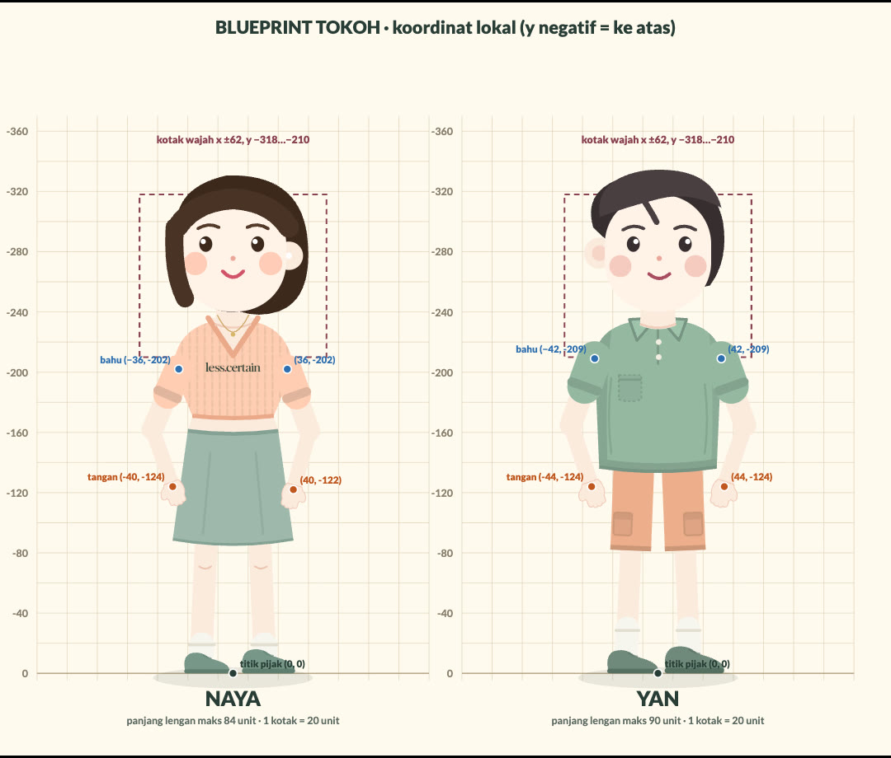
Sistem koordinat
- Titik asal (0, 0) = tengah di antara kedua kaki, di lantai. Sumbu y negatif = ke atas.
- Tinggi tokoh ±340 unit (ujung rambut ±−335). Kotak wajah x −62…62, y −318…−210.
- Skala 1 = 1 unit per piksel. Tokoh penuh di layar: skala 2 (±680 px), lantai di y 1620.
- Skala tokoh di layar (skala tokoh × zoom kamera) maksimal 4,6.
- Lebar bahu Naya ±36 (y −202), Yan ±42 (y −209).
Proporsi
- Kepala besar ±1/3 tinggi badan (gaya chibi lembut).
- Mata oval gelap dengan satu titik kilau; alis tipis melengkung; hidung titik kecil; pipi merona bulat.
- Lengan dua ruas (atas + bawah) dengan siku; panjang total Naya 84, Yan 90 unit; lengan atas 42% dari panjang.
- Tangan kartun empat jari, kecil (skala 0,7 Naya; 0,76 Yan).
- Kaki lurus, sepatu kets bulat; bayangan elips tipis di lantai.
T3 · Warna tokoh dan rig
Palet per bagian badan
| Bagian | Naya | Yan |
|---|
| Kulit | #FCEADE | #FCEADE |
| Rambut | #3D281D (bayangan #4A3326) | #382E31 (sorotan #4A3E41) |
| Alis / garis wajah | #543A2A | #4A3E41 |
| Mulut | #D15368 | #A84C62 |
| Rona pipi | #FF9E80 | #E8998D |
| Baju | rajut V peach #FFCDB2, tulisan less.certain | polo sage #95B8A2, kantong dada, 2 kancing |
| Bawahan | rok sage selutut #9FB8AD | celana pendek peach #EDAE8C, kantong samping |
| Kaus kaki | #F8F5EF | #F8F5EF |
| Sepatu / sol | #78978A / #5F7D70 | #6F897B / #566F62 |
| Wajah memerah | #E98A80, gradasi dari dahi | #E58C86 |
Koordinat tangan per pose (relatif ke titik pijak)
| Pose | Naya kiri / kanan | Yan kiri / kanan | Catatan |
|---|
| santai | (−40,−124) / (40,−122) | (−44,−124) / (44,−124) | tangan di samping paha |
| melambai | (−62,−262) / (40,−122) | (−44,−124) / (66,−268) | lengan yang naik: siku di bawah tangan |
| pinggang | (−34,−150) / (40,−122) | (−44,−124) / (40,−150) | satu tangan di pinggang |
| bertaut | (−10,−140) / (10,−140) | (−11,−140) / (11,−140) | kedua tangan di depan perut |
| berpikir | (−30,−150) / (10,−224) | — | siku kanan ke bawah, tangan di dagu |
| pegangDepanDada | (−40,−124) / (30,−190) | (−44,−124) / (30,−190) | HP/gelas di tangan kanan |
| sodorKiri | — | (−50,−132) / (44,−124) | duduk; benda di tangan kiri |
| angkatGalon | — | (−40,−150) / (40,−150) | alas benda di y −140 |
Pemeriksaan anatomi lengan
Tolak bila: siku di atas bahu, lengan lurus kaku, jarak bahu–tangan melebihi panjang lengan, tangan di belakang kepala, lengan menyilang badan mendatar, tangan menempel di badan (|x| < 30–36 dan y > −228), atau siku mencuat keluar.
Gerak hidup
- Kedip 3 frame, jeda acak 2,3–5,3 dtk; 28% kedip dua kali.
- Napas: badan naik-turun ±1–2 unit, siklus ±3 dtk.
- Bicara: mulut buka-tutup mengikuti suku kata, hanya untuk pembicara bubble.
- Kepala miring ±4° mengikuti lirikan; badan condong ±3°.
T4 · Spesifikasi layar
Ukuran bubble, subtitle, kartu
Bubble (s = 60 px)
- Lebar = maks(2,6·s, jumlah huruf × 0,62·s + 1,3·s); tinggi = 1,9·s; sudut = tinggi/2 (oval).
- Isi krem #FFF9EF, huruf Lato Black s px tinta #283D36, garis dasar teks di y + 0,35·s.
- Ekor: pangkal di x ± min(0,22·lebar, jarak ke ujung), y + 0,38·tinggi; setengah lebar pangkal 0,32·s; dua kurva kuadratik ke ujung (dekat mulut).
- Bayangan: bentuk yang sama, tinta 13%, turun 0,12·s.
- Muncul memantul dari ujung ekor; efek suara pop.
Subtitle
- Baris pertama mulai x 110, y 300; jarak antar-baris 70 px.
- Kotak per kata: lebar teks + 20, tinggi 62, sudut 8; jarak antar-kata 8 px.
- Lato Bold 44 px; teks di x + 10, y + 45.
- Krem #FFF9EF + tinta; kata kunci wine #8B4354 + krem.
- Masuk 7 frame (ease-out kubik, geser dari −12, −8); keluar 3 frame.
Tanda "!" dan "?"
- Bintang 22 titik, jari-jari 38/26 unit; isi wine atau sage.
- Huruf Lato Black 44 krem; goyang ±3° yang mereda dalam 20 frame.
Kartu penutup
- Kartu tinta #283D36 opasitas 97%, sudut 40; isi di x 60–920 (tengah x 490), y ≥ 250.
- Wordmark Playfair 88 krem; garis emas #D1A258; CTA Lato 38.
- Tombol 250×70, sudut 35: wine "+ Ikuti" → krem "Mengikuti ✓" di detik 1,3 kartu, cincin emas memancar.
- Gradasi gelap di belakang kartu 0→80% dalam 12 frame.
Rumus gerak (t = 0…1)
| Nama | Rumus | Dipakai untuk |
|---|
| smooth | t² · (3 − 2t) | kamera, cahaya, perpindahan tokoh |
| quick | 1 − (1 − t)³ | subtitle, kartu masuk, benda muncul |
| popIn | x = (f − a)/7; skala = 1 + 2,2(x−1)³ + 1,2(x−1)²; opasitas = min(1, 2x); hilang di 6 frame terakhir | bubble, tanda, kartu gag |
Area aman untuk semua teks dan kartu: x 60–920, y 220–1480. Bubble tidak boleh menutupi lebih dari 12% kotak wajah tokoh mana pun.
T5 · Waktu, audio, render
Angka-angka produksi
| Hal | Nilai |
|---|
| Kanvas | 1080×1920, 30 fps, frame = round(detik × 30) |
| Shot minimum | 39 frame (1,3 dtk) |
| Awal narasi | potongan audio mulai 0,15 dtk; kata pertama ±0,27 dtk; subtitle tampil ≤0,3 dtk |
| Antar-baris | potong di jendela 20 ms paling senyap, dicari antara (akhir baris − 0,35) dan (awal baris berikut + 0,1); jeda maks 1,1 dtk kecuali jeda sengaja |
| Penutup | kartu mulai 24 frame setelah kata terakhir; kartu penuh +12 frame; video selesai +66 frame (ekor 3,0 dtk) |
| Kamera | diam ≤50% waktu; diam beruntun ≤3 dtk; transisi ≤0,7 dtk; skala tokoh efektif ≤4,6; pembuka ≥2,4 |
| Efek suara | pop −14 dB · slide −20 dB · tick −18 dB · click −11 dB · pin −15 dB (relatif ke klip efek) |
| Kenyaringan | −14 LUFS terpadu, puncak ≤ −1 dBTP, normalisasi linear dua tahap setelah efek dicampur |
| Audio | 48 kHz stereo, AAC 192 kbps |
| Video | H.264, yuv420p, CRF 18, faststart |
| Stand-up | jeda 1,2–1,8 dtk sebelum punchline terkuat; narasi menimpa 40–50% ekor tawa, tawa diredam 6 dB; tawa ≤10%, senyap 8–12%; puncak tawa ±−18 dB, kekeh ±−25 dB; gumam ruangan + pantulan ruang kecil |
Data waktu (format timeline)
{ "fps": 30, "outro": 1984, "total": 2038,
"lines": [ { "text": "Pacarku hampir nggak pernah minta maaf.",
"start": 0.27, "end": 2.41,
"words": [ {"w":"Pacarku","s":0.27,"e":0.78}, {"w":"hampir","s":0.80,"e":1.12}, … ] }, … ] }
Waktu baris dan kata dalam detik setelah penyuntingan, dipakai untuk subtitle per kata, bubble, perubahan ekspresi, dan potongan kamera. Untuk stand-up ditambah daftar tawa: baris, waktu mulai, durasi.
T6 · Format storyboard
Satu kalimat, satu panel
Storyboard ditunjukkan sebagai gambar diam: setiap panel berisi keadaan awal dan akhir kalimat itu. Panel dan tabel di bawah dibuat sebelum suara.
| # | Narasi (tag) | Lokasi · waktu | Kamera | Tokoh · pose · mood | Layar |
|---|
| 1 | [softly] Pacarku hampir nggak pernah minta maaf. | kedai kopi · malam hujan | close-up 2,6 → dorong 2,9 | Naya santai, soft, menatap kamera; Yan di samping | subtitle, kunci "maaf" |
| 2 | [annoyed] Setiap kali kami bertengkar, dia cuma diam. | kedai kopi | medium berdua, geser kanan | Naya pinggang, annoyed, memerah; Yan bertaut, unsure | bubble Naya "Kamu tuh…!" |
| 6 | [skeptical] Awalnya aku pikir, dia cuma gengsi. | kamar Naya · malam | medium, dorong masuk | Naya berpikir, thinking; kucing tidur di kasur | bubble pikiran "Gengsi?" |
| 8 | Habis bapaknya marah besar, | rumah Yan kecil · kilas balik sepia | tarik mundur dari foto keluarga | bapak pinggang, annoyed; Yan kecil hurt | tanda "!" wine |
| 11 | [curious] Di banyak rumah, maaf dan sayang… | deretan jendela kampung | zoom out satu → semua jendela | extras keluarga di tiap jendela | — |
| 16 | [curious] Kalau kamu, tipe yang bilang, atau yang nunjukin? | taman senja | close-up, Naya menatap kamera | Naya soft; Yan warm | kartu penutup varian tanya |
Isi setiap panel
- Nomor dan teks kalimat; waktu perkiraan.
- Gambar awal dan akhir yang berbeda (aksi, kamera, cahaya, atau benda).
- Catatan bubble, tanda, kartu, dan efek suara.
- Penanda belokan "Tapi…" dan momen "oh ternyata".
Pemeriksaan storyboard
- Frame pertama sudah hook (close-up/medium, tanpa layar kosong).
- Lokasi dan waktu konsisten antar-panel.
- Kucing oranye muncul sekali.
- Bubble tidak menutupi wajah; teks di area aman.
T7 · Contoh prompt
Prompt utama untuk agent
Lampirkan buku gaya ini, lalu kirim prompt berikut. Ganti bagian dalam <…>.
Kamu adalah produser animasi untuk akun less.certain. Buku Gaya Less.
terlampir adalah aturan wajib; kalau ada yang bertentangan, tanya aku.
Tugas: buat satu video vertikal 1080×1920, 30 fps, 61–75 detik.
Topik: <situasi sehari-hari, mis. "pasangan yang selalu telat">
Narator: <Naya / Yan> Seri: <reguler / Open Mic #N>
Kata kunci pencarian: <mis. "telat">
Kerjakan bertahap sesuai halaman T1. Berhenti dan tunggu persetujuanku
setelah: (a) lembar ide + naskah bertag, (b) storyboard diam awal→akhir
per kalimat, (c) cover + caption. Jangan membuat suara sebelum
storyboard disetujui.
Aturan yang paling sering dilanggar:
- Gambar Naya/Yan persis seperti blueprint dan palet; jangan desain ulang.
- Hook ≤3 dtk tanpa salam; "Tapi…" di 55–65% durasi; penutup pertanyaan.
- Bubble ≤4 kata, tidak menutupi wajah; subtitle ≤7 kata, 2 baris.
- Kamera selalu bergerak; diam ≤50%, tidak ada diam >3 dtk.
- Suara ElevenLabs eleven_v4, ID suara di halaman Suara, tag ekspresi.
- Tanpa musik. −14 LUFS. Kartu penutup 3 dtk di atas adegan terakhir.
- Jangan mengunggah apa pun.
Di akhir, isi checklist "Sebelum mengirim" dan laporkan yang belum lolos.
Prompt lembar tokoh (sekali, sebelum video pertama)
Gambar ulang Naya dan Yan sebagai ilustrasi vektor datar pastel tanpa garis
tepi, mengikuti halaman 3 (gambar tokoh), T2 (blueprint) dan T3 (warna).
Buat satu lembar: tampak depan dan 3/4, enam ekspresi (soft, warm,
annoyed, hurt, thinking, unsure), semua pose di T3, dan kucing oranye
tiga pose. Letakkan gambar asli di sebelahnya untuk dibandingkan.
Tunjukkan ke aku dan tunggu persetujuan.
T7 · Contoh prompt per tahap
Prompt naskah, storyboard, suara
Naskah
Tulis naskah Less. varian <A/B/C> tentang <topik>, narator <Naya>,
145–175 kata lisan. Format: satu kalimat per baris, diawali tag ekspresi
bila nadanya berubah (lihat halaman tag). Tandai baris hook, belokan
"Tapi…", dan "oh ternyata". Tambahkan kolom bubble (≤4 kata) dan
"dikirim ke siapa". Cek dengan daftar lolos/ulang dan laporkan hasilnya.
Storyboard
Buat storyboard dari naskah yang disetujui: satu panel per kalimat, gambar
diam keadaan awal dan akhir, mengikuti tabel di T6 (lokasi·waktu, kamera,
tokoh·pose·mood, layar). Pakai hanya pose dari pustaka; lokasi Indonesia
dengan 6–8 benda khas dan perspektif trapesium. Tandai shot kucing oranye.
Kirim sebagai satu gambar lembar + tabel, lalu tunggu persetujuan.
Suara
POST https://api.elevenlabs.io/v1/text-to-speech/<ID suara>/with-timestamps
Header: xi-api-key dari variabel lingkungan (jangan ditulis di prompt)
Body: { "model_id": "eleven_v4",
"text": "<seluruh narasi bertag, satu baris per kalimat>",
"voice_settings": { "stability": 0.5, "similarity_boost": 0.75 } }
Stand-up Yan: stability 0.0. Simpan audio + alignment; jangan membuat
ulang kalau teksnya sama. Cek tidak ada suku kata terpotong.
Animasi dan render
Animasikan storyboard yang disetujui dengan timeline dari suara.
Subtitle per kata (T4), bubble muncul di kata yang diucapkan, ekspresi
berganti di awal kalimat, kamera bergerak di setiap shot (smooth),
kartu penutup varian <ikuti/tanya/seri> di 24 frame setelah kata
terakhir. Tambah efek pop/slide/click sesuai T5, normalisasi −14 LUFS,
ekspor H.264 CRF 18. Lalu jalankan pemeriksaan di halaman checklist.
T7 · Contoh prompt lanjutan
Prompt Open Mic, cover, kemasan, revisi
Open Mic
Tulis episode Open Mic #<N>: Yan stand-up tentang <keresahan>. Di bawah
90 dtk, satu premis, 2–3 bit, callback di akhir. Deadpan sebagai dasar,
[shouting] maksimal 2 kali. Tandai punchline, jeda sebelumnya, dan tawa
(kekeh/sedang/besar) dari pustaka tawa yang sudah ada. Jalankan uji tunjuk
dan batas aman satire; laporkan kalimat yang berisiko.
Cover
Buat dua cover 1080×1920 (+ potongan 3:4 dan 4:5): (1) pose sedang dengan
benda petunjuk <benda> dipegang tokoh, (2) close-up wajah. Wordmark kiri
atas, judul 2–4 kata = hook. Wajah paling terang, latar lokasi buram,
vinyet. Kosongkan kanan atas dan kiri bawah. Tampilkan simulasi grid 3:4.
Kemasan
Tulis caption TikTok/Instagram dengan template halaman Kemasan, judul
YouTube Shorts ±60 karakter diawali kata kunci, dan komentar sematan
(sumber + satu pertanyaan). Tanpa ajakan share/tag/komen.
Revisi dan pemeriksaan
Periksa video ini terhadap checklist buku gaya. Untuk setiap butir tulis
lolos/gagal + detik kejadian. Khusus cek: bubble vs wajah, teks di luar
area aman, diam >3 dtk, skala tokoh >4,6, suku kata terpotong, volume.
Perbaiki yang gagal tanpa mengubah suara kecuali diminta.
Prompt gambar (hanya untuk eksplorasi ide)
Flat pastel vector illustration, no outlines, soft gradients, warm cream
background, Indonesian setting. Young woman "Naya": dark-brown chin-length
bob, round face, rosy cheeks, peach knit V-neck crop sweater, sage knee
skirt, sage sneakers. Young man "Yan": short black hair with one strand,
sage polo shirt, peach shorts. Chibi-soft proportions, big head.
Negative: outlines, anime, 3D, realistic, text artifacts, extra fingers.
Lampiran · Lembar ide
Lembar ide episode
Isi sebelum menulis naskah. Baris yang tidak relevan ditulis "—" dengan alasan.
| Judul episode | |
| Seri dan narator | |
| Asal ide (pengalaman/isu/komentar + izin) | |
| Situasi akrab (1 kalimat) | |
| Penilaian yang dipertanyakan | |
| Rumus hook + kalimat hook | |
| Kata kunci pencarian | |
| Varian naskah (A/B/C/Open Mic) | |
| Belokan "Tapi…" (detik + visual) | |
| Momen "oh ternyata" | |
| Dikirim ke siapa? | |
| Alasan dan bukti (sumber; fakta/dugaan/opini) | |
| Penutup | |
| CTA penutup (ikuti/tanya/seri) | |
| Kucing oranye (shot + pose) | |
| Tokoh, extras, lokasi | |
| Target durasi dan kata | |
| Judul cover (2–4 kata) + benda petunjuk | |
| Khusus Open Mic: #episode, bit, punchline, uji tunjuk | |
Lampiran · Contoh terisi
Maaf yang Nggak Pernah Diucapin
| Hook | Pengakuan "aku": "Pacarku hampir nggak pernah minta maaf." Close-up di kedai malam; Naya menatap kamera. |
| Kata kunci | minta maaf |
| Penilaian | "Dia cuma gengsi." |
| Varian | B, cerita lalu mundur |
| Oh ternyata | Di rumah Yan dulu tidak ada yang bilang maaf; martabak setelah bapak marah adalah cara berdamai. Cahaya senja menghangat. |
| Mundur | "Di banyak rumah, maaf dan sayang memang lebih sering ditunjukin daripada diucapin" — pengamatan, bukan klaim riset. Visual: deretan jendela. |
| Dikirim ke | Pasangan yang jarang bilang maaf |
| Penutup | "Kalau kamu, tipe yang bilang, atau yang nunjukin?" → kartu varian tanya |
| Bubble | "Kamu tuh…!", "Lho?", "Gengsi?", "Makasih, ya.", "...maaf, ya." |
| Kucing | Duduk dan tidur di kasur Naya; berjalan di taman |
| Hasil | 66,5 detik, narasi v4, waktu diam 30%, −14 LUFS, cover pose "Dia jarang minta maaf." |
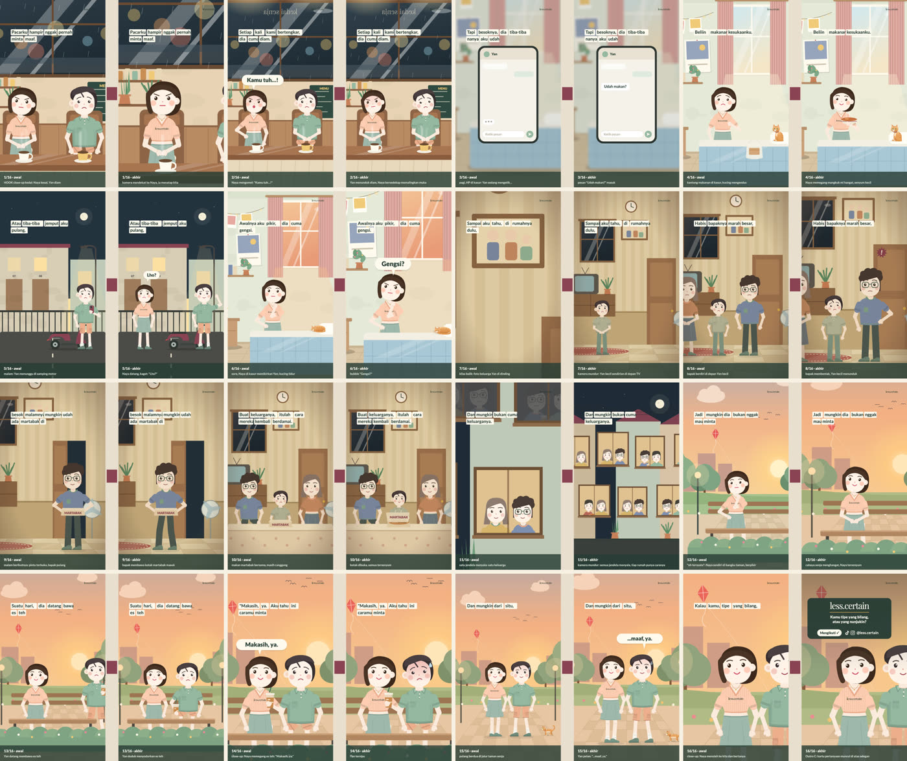
Storyboard: 16 kalimat, keadaan awal → akhir, lima lokasi.
Lampiran · Checklist
Sebelum mengirim
Naskah dan storyboard
- Lembar ide terisi; hook ≤3 detik dengan kata kunci, tanpa salam.
- "Tapi…" di 55–65% dengan perubahan visual; ada momen "oh ternyata".
- Penutup pertanyaan/pengamatan; tanpa moral; angka ditulis dengan huruf.
- Storyboard awal → akhir berbeda di setiap panel; disetujui.
- Open Mic: lolos uji tunjuk; izin komentator kalau topik dari komentar.
Dunia dan tokoh
- Benda wajar di dunia nyata dan sesuai waktu cerita.
- Perspektif trapesium; skala benda sesuai tokoh.
- Pose dari pustaka; tangan dan benda dicek di crop 100%.
- Tidak ada tampak belakang penuh; tokoh duduk tertutup sampai lantai.
- Kucing oranye muncul sekali; satu kucing per shot.
Layar dan kamera
- Frame pertama: shot sedang/close-up, subtitle ≤0,3 detik.
- Bubble ≤4 kata, tidak menutupi wajah, jauh dari subtitle.
- Subtitle ≤7 kata dan 2 baris; semua teks di area aman.
- Waktu diam ≤50%, tidak ada diam >3 detik.
- Skala tokoh di layar ≤4,6×.
Audio dan penyerahan
- Narasi v4, tanpa suku kata terpotong; tanpa musik.
- Volume −14 LUFS ±1, puncak ≤ −1 dBTP.
- Cover pose dan wajah (9:16, 4:5, 3:4) + caption + komentar sematan.
- Setelah disetujui: paket siap unggah dibuat.
- Belum ada unggahan tanpa permintaan pemilik akun.
Kalau ragu: tanyakan ke pemilik akun. Urutan prioritas: permintaan terbaru pemilik akun > arahan tercatat > buku gaya ini > kebiasaan lama.